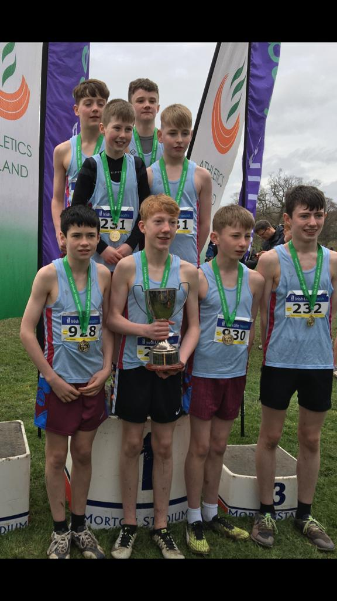
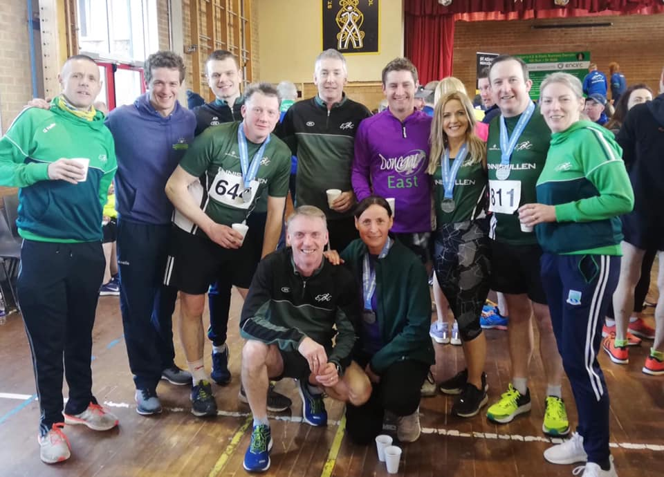

Results
Due to the coronavirus epidmeic, our latest results are not as recent as we would have hoped.
All Ireland Success For Junior Boys
Boys who represent both ERC and St Michael's had success on 7th March taking home trophies for best team in the Junior Boys section. The future of ERC looks bright!
ERC Sweep Up In Derrylin
It was a case of smash and grab as ERC won nearly all the prizes on offer at Rock Runners' annual 5K/10K event. First in the 5K, we had Anthony Duffy continue good form as he secured 2nd Male in 21:24. As for the 10K, the everpresent Dave Slater secured 3rd Male on a hilly course in a excellent time of 39:18. As for the ladies, Annette Hughes was Second Lady in 52:18 and Denise Kavannagh Third in 55:20.
Trials For Representing NI And Success In Ballyshannon
On 27 January, some of our athletes participated in the N.I. and Ulster Cross Country trials. Our representatives produced a valient effort of 12th out of 20 teams. The team we had representing ERC was Damien Murray, Paul Carron, John McDonnell and Fegus McGirr. We also had Domhnall Lynam representing his univeristy (Queen's University Belfast). On the same date, we had ERC athletes at Ballyshannon 5K. Well done to Stephen McElroy, Karen McCaffrey and Matthew Murphy for taking part! Extra special well done to Matthew for getting third in his category.